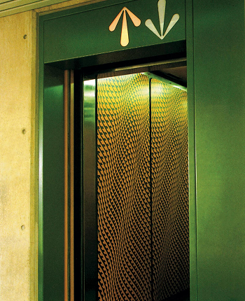

Cameron offices (1970s)
Andrews collaborated with architect John Andrews on the design of the interiors for the Cameron Offices in Canberra. This large-scale government complex was a significant example of Brutalist architecture in Australia, and Gordon Andrews' role involved designing furniture and interior elements that complemented the building's bold, geometric structure. His work contributed to creating a cohesive and functional environment, demonstrating his ability to integrate furniture and interior design within broader architectural contexts.
IMAGES: AGI: https://a-g-i.org/design/cameron-offices-lift-design
